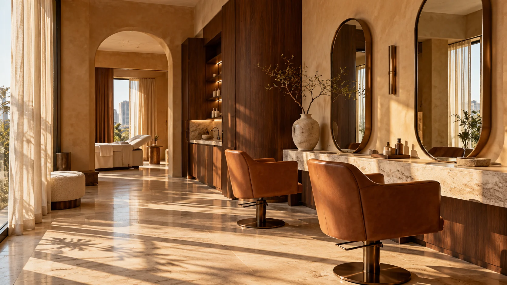

01 / THE EVERYDAY EDIT✳
The Essential
₹2,700 / month
Your regular reset.
- One haircut & finish or classic facial
- One wash & blow-dry
- 10% off additional salon services
- One month validity
Great hair. Considered skin care.
And a little space to feel like yourself.
Individual by nature.
Personal by design.
A great cut moves with you. A thoughtful skin ritual fits your life. A beautiful space makes you slow down.
That’s the idea behind SÉRA. Hair artistry, skin care and the pleasure of being looked after — all in one considered place.
Step inside our world ↗Start with what brings you here.
We’ll take it from there.
Begin with a conversation. Your routine, your concerns, your comfort. Then make a plan that makes sense for you.
Listen first. A one-to-one consultation.
Make it personal. A clear plan and price.
Keep in touch. Room for questions, always.
Medspa pathway shown as a concept. Any clinical procedure requires assessment by a suitably qualified practitioner; no clinical procedures are offered by this demo.
Two small choices.
A good place to begin.
Save a little inspiration
for your next appointment.
Campaign imagery and styling references. These are illustrative concepts, not client results.
The quiet getting-ready moments. The first look. The photographs you’ll keep. A beauty story that feels unmistakably yours.
Trial & look direction · Makeup & hair
Draping · A considered getting-ready timeline
Warm stone. Soft light.
Somewhere to exhale.

AN IMAGINED SPACE / MUMBAITime to talk through your ideas, preferences and the details that matter.
A quieter corner, an unhurried appointment and your own kind of pause.
Your service, your time and your total, agreed before we begin.
A monthly appointment with yourself.
Choose a little care, more often.
Your regular reset.
A little more room for you.
Try the ritual finder, explore a treatment’s details, or select a consultation in the booking planner. A real salon would confirm the right service with you before your visit.
This concept starts the medspa journey with a consultation. A real medical provider must assess suitability, explain risks, alternatives and costs, and confirm credentials before any clinical procedure. This demo offers no clinical procedures.
SÉRA is a fictional client demo. Prices, packages and time slots are illustrative. The booking planner creates a sample itinerary in your browser; it sends nothing and reserves no appointment.
A few reference images, your usual styling routine, and details of previous colour or treatments. Include what you love about your current hair and what you would like to change.
The sample bridal package includes a trial, makeup, hair and draping. A final plan would be tailored around your events, outfit, location and getting-ready schedule.
A suggested live-business policy is to request changes at least 24 hours before a visit. Deposit and cancellation terms would be agreed with the business before launch. No cancellation charges apply in this demo.